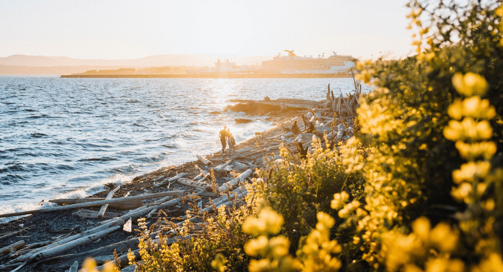

SĀBAN™ · MADE IN VICTORIA, BC
Our Island, Our Responsibility
Our little island can make big waves.
Surrounded by the ocean, shaped by ancient forests and blessed with breathtaking natural beauty, Vancouver Island is a place we're proud to call home.
We believe sustainability begins with small, thoughtful choices that help protect the place we love. When we make those choices together, our little island can make big waves.
At SĀBAN, that belief inspires us to create with care, think about our impact and do our part for the island we love.
02 · THOUGHTFUL CHOICES
The Journey We Don't See

Living on Vancouver Island reminds us that almost everything we bring into our homes has travelled to reach us.
From ingredients to packaging, transportation is part of every product's story. At SĀBAN, we believe sustainability means paying attention to these journeys, reducing unnecessary waste and making thoughtful choices wherever we can.
Small decisions matter. And together, they can make a meaningful difference to the island we call home.